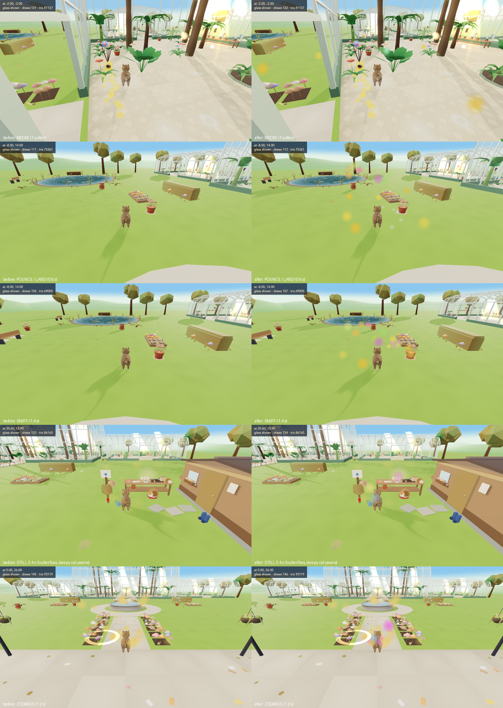

Left: pass 7 (voice off, ?voice=0). Right: pass 8. Rows: a meow (bees circle in, pollen shed from near blooms, the hummingbird zips across, wind chimes and a songbird on the game's audio), a landing (petals and leaves drop, droplets scatter, pots shiver a puff), a sniff (scent sparkles drift to the bloom she faces, it glows, a soft chime), standing still (butterflies come to land, the sleepy cat in her bed yawns), zoomies (a wake of petals). Page: tools/verify/verify-greenhouse.html shots p8_meow, p8_land, p8_sniff, p8_still, p8_zoom (act + secs; the page canvas is 960x540 at both window sizes). Honest: the meow and still reactions are small soft dots at this size; the landing, sniff glow and zoomies read best. Also fixed: the arrival pollen puff is smaller (it was chunky discs).
